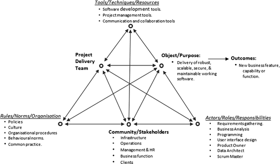
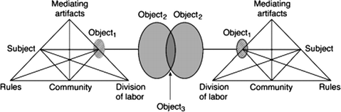
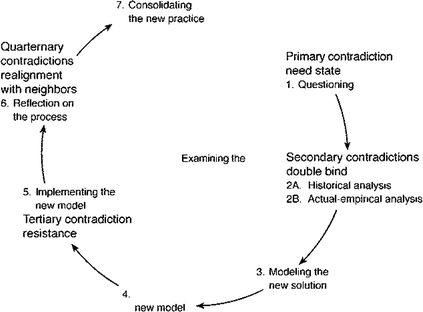
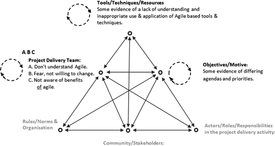
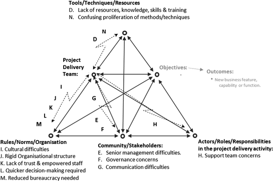

1 Introduction
Much of the literature regarding Agile approaches identifies success factors and challenges at different levels that impact on the transition to and development of agile practices [14, 15]. They don’t however provide detailed accounts of the different social and environmental causal factors & tensions behind these challenges and the behavioural, historical and learning elements that influence, impede or facilitate them. Many of these studies do draw attention to the need for further research in this area as well as the lack of suitable analytical techniques. Vijaysarathy and Turk [66] dialectical perspective provides insights into the role of detracting factors and their interactions with enablers and they stress the need to examine these factors at work and the dialectical interplay between them.
Dennehy and Conboy [12] point to multiple studies that highlight the critical role of culture and team dynamics and the need to study software development within the environment within which it is to be implemented. Given the inter-related and complex nature of the environment faced by organisations undertaking Agile approaches, this study draws on Engestrom’s Activity Theory (AT) framework [16] as a wide-ranging integrative analytical tool. Derived from Cultural-Historical Analytical Theory (CHAT), the framework facilitates the examination of multiple aspects of work practice including the tensions, contradictions and friction that can arise when new initiatives and practices are developed. Activity Theory has a focus on expansive learning [16] which starts with questioning the existing practice, then proceeds to actions of analyzing its contradictions and modelling a vision for a new approach and then to actions of examining and implementing the new model into practice.
Importantly the resolution of these contradictions can be viewed as drivers of change and an opportunity to reflect and learn as well as identifying new ways of structuring activities [12]. Therefore this study identifies the occurrences of contradictions and tensions as organisations seek to implement agile approaches and this focus provides a means of understanding change and action [18, 38].
This paper is organised as follows. Section 2 links learning with maturity and addresses issues regards agile maturity. Section 3 introduces Activity Theory and Expansive learning and the notion of contradictions within activities. Section 4 discusses the application of Activity Theory to the Agile software development domain and discusses the findings of the research conducted to date. Finally, Sect. 5 discusses planned future research and concludes the paper.
2 Agile Maturity
The Capability Maturity Model integration (CMMi) is probably the most well-known maturity model which Meyer [47] indicates is a collection of best practices that are specified precisely to facilitate an assessment of compliance so that organisations can reach identified goals, He identifies that the three elements of Goals, Practices & Assessment are at the centre of the maturity model approach. CMMi is predominantly an American approach whilst the ISO/IEC 15504 SPICE (Software Process Improvement & Capability Determination) is a European equivalent focused specifically at software development elements. As indicated by Paulk [57] an organisation with these well-defined processes is much more likely to produce software that consistently meets user’s requirements. Therefore there appears to be a sound rationale to attempt to link agile practices to traditional maturity model.
However as Meyer [47] also points out, this is in marked contrast to the general perception of agile advocates who view the two as incompatible and this has given rise to a substantial number of agile maturity models [44]. Fritzsche and Keil [23] attempted to determine which CMMi processes are supported by agile methods with some adjustments and which processes are in conflict. They indicate that CMMi level 2 can be obtained by agile methods (Scrum & XP). Apart from two process areas, agile methods can achieve Level 3. However levels 4 & 5 are not possible without adopting additional practices [64] or “without making changes to the methods that contradict agility” [23].
A recent review of Agile maturity models [32] identified that the agile maturity model literature was predominantly divided into two major groups. The first was concerned with the co-existence of agile methods in an environment where CMMi was present [45] and the second related to improving agile implementations without the consideration of other process improvement frameworks. In this latter group the intent is to provide an equivalent maturity model for agile implementations [55, 56, 63].
This rise in the number of agile maturity models has been critiqued by Gren et al. [28] who advocate instead more effort to validate existing ones to facilitate their use by practitioners. They also question the idea of separate maturity models for Agile methods and indeed the whole notion of maturity and state that
“We generally do not believe a hierarchical model of practice is a good model for agility in organisations. For example, why would technical excellence be on the highest level and collaborative planning on the lowest? We do not believe it makes sense to state that collaborative planning is a prerequisite for technical excellence” [28].
Fontana et al. [21] point to another issue with the use of agile maturity models. They note that agile practices are customized for specific contexts where teams adopted different practices based on different circumstances. These circumstances do not lend themselves to the prescriptive practices & processes of maturity models and their associated requirements. Instead they proposed a generic checklist (“Agile Compass”) that could be used to assess maturity without specifying practices and where “teams achieve maturity via an evolutionary pursuit of specific outcomes” [22].
Consequently there is a growing appreciation of the factors involved in agile maturity that go beyond sets of practices to consider some form of cultural assessment that might also be included as part of the assessment process [28]. The literature varies from academic articles with large lists of personnel and human resource success factors for adopting agile [9, 14] to industry surveys of the State of Agile [65]. These articles do identify a wide range of cultural, organisational and people factors as key elements of the transition process. In particular Nerur et al. [50] examined the challenges of migrating to agile methods and emphasized that culture exerts considerable influence on decision-making processes, problem-solving strategies, innovative practices and social negotiations. Of interest is their indication that neither culture nor mind-sets can easily be changed pointing out that facilitating this shift will require the “right blend of autonomy and cooperation”.
In addition to the shift in emphasis to cultural and human factors is another recent consideration of transitioning to agile and the development of agile practices in a more incremental and responsive manner. Heidenberg et al. [31] developed a method based on multiple case studies in a large organisation that helps to pilot agile. They indicate that systematic piloting can be used to build experience and assist in the deployment of agile approaches. Ganesh and Thangasamy [25] indicate that a general guiding principle for implementation should be to maintain the facility to respond to changing requirements rather than following a specific set of practices. Gandomani and Nafchi [24] pick up this principle and propose a framework for Agile transformation and adoption loosely based on the PDCA (Plan, Do, Check, Act) or later PDSA (Plan, Do, Study, Act) approach also known as the Deming wheel [11] which is itself a form of the scientific method “Hypothesis – experiment – evaluate”.
This approach closely aligns with the agile philosophy of incremental and iterative development and involves continuous learning on the part of all stakeholders. The authors indicate that “the outcome of the iterations are adopted practices and not deliverable product elements” [24]. This is contrasted with other adoption and transition frameworks which the authors claim are too complex and inflexible and require significant organisational overhead.
2.1 Agile Maturity and Learning
Several articles particularly stress the important role of an organisation’s ability to nurture learning, team work, personal empowerment and self-organisation [51, 62]. Misra et al. [48] undertake a large survey focused on success factors rather than “challenges” in adopting agile software development. In particular the identification of a “Learning & Training” factor is interesting as it was assessed by the authors by examining the “willingness to continuously learn from one another and train the team members through mentoring and professionally guided discussions” [48].
There is an emphasis on continuous learning from participating individuals and these “challenges” and “success factors” are typical of a number of studies in this area. Maier et al. [46] review agile maturity models and agile improvement and adoption frameworks/grids on the basis of work orientation, mode of assessment and intent. They also query what it is that actually makes organisational capabilities mature and they identify “Emphasis on Learning” as one of four elements that are typical. Maier et al. [46] draw on Argyris and Schon’s [1] concepts of single & double loop learning to discriminate between different levels of maturity.
Korsaa et al. [40] support this focus on the people & learning aspects in amongst all the process and practice improvement focus of CMMi and SPICE initiatives. They assert that improving software processes does depend upon the organisation’s ability to support empowered individuals through a learning environment. This is key as it recognizes the importance of individuals being empowered to learn as a means of achieving improvements in the delivery of software. They recognize that the human aspect is crucial for process improvement as it is entirely dependent upon the individual’s motivation to change the way they work. Korsaa et al. [40] also compare the work of Michael Hammer [29] and Jacobsen et al. [33] and conclude that both perspectives place the individual central in process analysis making individuals responsible for changes and improvements. This is most likely to take place within a learning organisation culture that supports continuous improvement.
Boehm [4] points out that as agile projects do not put the emphasis on documentation then the implication is that much of the project knowledge will not be held explicitly and will be held tacitly within individual’s minds. Following a survey of agile professionals, Rejab et al. [59] identify five approaches to distributing (sharing) knowledge and expertise within agile teams from hands-on learning to apprentice–master models and coaching & mentoring. In terms of facilitating this knowledge sharing, Kahkonen [35] advocates that Agile project management approaches need to incorporate practices that lead to the creation of Communities of Practice (CoPs) and has found them to be useful in aspects of Agile methods as well as ultimately assisting with the agility of the organisation.
Similarly, Jugdev and Mathur [34] identify Project Reviews and Communities of Practice as vehicles for gathering and sharing project learning and more recently there has been a significant focus on CoPs with Paasivaara and Lassenius [53] and Paasivaara and Lassenius [54] identifying the existence of multiple examples of the adoption of Communities of Practice within a large distributed Agile project management environment (Ericsson). They identified varied examples of Communities of Practice occurring including Coaching CoPs, Development CoPs and specific feature driven CoPs. The authors conclude that these CoPs supported the process of implementing Agile Project Management and were central to easing the problems of the Agile transformation process. From an organisational perspective it would be prudent to encourage the development of these CoPs but there is some concern that they can be formally fostered although Kahkonen [35] is confident that although such ad hoc situated learning approaches arise naturally, organisations can nevertheless influence their development and this view is also supported by Wenger et al. [68].
Newell and David [52] examined learning in IT projects and the influence of situated practice learning compared to the use of formal project management methodologies. They contend that social processes distort the traditional project management elements such as plans and visions but that this distortion is not necessarily negative and in fact may realize greater benefits than simply focusing on effective work practices. They note that this is not poor management but a realisation that ad-hoc processes can be the norm and will influence and modify formal processes as people will learn & modify new practices & approaches in their own way [52].
Continuing the ad-hoc processes premise, Gherardi [26] proposes a similar approach of “learning-in-organisations” which is essentially constructivist - whereby people will construct their own understanding and knowledge of the world through experience and on reflecting on those experiences. Anything new that is experienced has to be reconciled with past experiences therefore individuals are actively creating their own knowledge. Gherardi [27] makes the following points.
- Learning occurs through practice (a domain of knowing and doing) where a network is socially woven around a domain of knowledge. The knowledge, the subject (person), the object (what is being done such as software development) are produced together within a situated practice.
- The locus of knowledge and learning is situated in practice (which connects knowing with doing). This is distinct from Communities of Practice which emphasize the collaboration and social and situated aspects of learning [42].
Given the emphasis on individuals within the agile approach [21] it is suggested that agile improvements and maturity will have much to do with an individual’s learning opportunities which in itself will be a function of their work practices (both historical & current), interactions & collaborative activities and the organisational and social elements and infrastructure that impacts on these aspects. Gherardi [27] notes that the use of Activity Theory within a situated practice context could help understand where knowledge is socially constructed and how it is constructed both actively and passively.
3 Activity Theory (AT)
Instead of solely focusing on mental processes, Activity Theory (AT) considers the relevance of actually undertaking the activity and the important influence of the environmental mix such as culture, language, peers, teachers and artifacts. The Activity Theory perspective of Vygotsky [67] and Leont’ev [43] was extended by Engestrom [16] beyond the single activity and whereas Leont’ev regards the subject of the activity as an individual, Engestrom sees the unit of analysis as collective activity rather than as individual activity [36] and the object (motive) is shared by a group or a community. Bodker [6] does clarify this somewhat and indicates that although these activities are regarded as collective, each activity is conducted through the actions of individuals directed towards an object.
Engestrom [16] argues that the collective perspective is a useful tool for studying organisational change and this gives rise to the well-known triangular diagram illustrated in Fig. 1 below which has been adapted to represent software delivery activity. It is this collective directed activity perspective that is utilized in this study to examine learning within agile teams as they pursue improvements in agile approaches and gives rise to increasing “agile maturity”.

Fig. 1.
Example project delivery activity (after Engestrom [17])
The main focus of attention is the line through the middle of the triangle from the Project Delivery Team node to the Object/Purpose node that represents the focus or purpose of the activity/work. In addition, activities both mediate and are mediated (affected/influenced) by the node representing Tools/Techniques/Resources that are used as part of the activity as well as by the Community/Stakeholders context node within which the activity takes place. For example the software development activity is mediated by the tools used such as Kanban Boards or conformance with a planned work package specification. Similarly the software development activity is mediated by the community & social group context such as whether clients are closely involved within the development activity.
This perspective has a further dimension where the relationship between the Project Delivery Team node and the Community/Stakeholders node is mediated by the node representing Rules/Norms/Organisation. Similarly the relationship between the Community/Stakeholders node and the Object/Purpose is mediated by the Actor/Roles/Responsibilities node that reflects how work & responsibilities are divided and & allocated.
This can be developed further to include multiple perspectives and networks of interacting activities and Fig. 2 below shows the interaction of two neighbouring activities which for instance could be the activity of a development team in an IT department interacting with the activity of a client in another organisational function.

Fig. 2.
Activity interactions [17]
De Souza and Redmiles [13] have applied Activity Theory (AT) to a software development environment and they regard AT as useful as it is open-ended and allows for the introduction of new ideas. Other sources have commented on a significant strength of Activity Theory is its ability to address almost any situation and provide a broader perspective that caters for a variety of factors at multiple levels “Some of the power of activity theory lies in the way it ties insights into larger wholes to provide a clarifying framework for the bigger picture” [36]. In addition Mursu et al. [49] apply Activity Theory to an Information Systems development activity and identify its compositional elements such as the actors, activity levels and rules & norms (Mursu et al. [49] after Korpela et al. [39]). This analysis would form a useful starting point when applying Activity Theory to agile software development activity
In their Activity Theory based study of software development environments, Barthelmess and Anderson [7] focus on improving support for collaboration and conclude that each situation will be different and individuals will do things their own way. Perhaps this perspective sheds some light on why often cited lists of success factors [14] prove effective in one environment but are ineffective in another. It also might be indicative as to why there are so many different and varied agile maturity models and perspectives on what constitutes agile maturity and such points have been made extensively elsewhere [22, 52]. What an Activity Theory perspective does facilitate is a more detailed examination of the socially constructed environmental mix within which each individual organisation’s context contributes to and enables the practice and activity of collaborative software development.
Korsaa et al. [40] point to another complication in the difference between the process that may be prescribed by an organisation and the process that is actually applied and followed by the performers. This causes difficulty in translating successful processes to other teams as the prescribed process will vary from that which is actually followed by the successful team. This further suggests a deeper level of analysis is required of actual practices at a collective and individual activity levels.
3.1 Activity Theory and Expansive Learning
Engestrom [18] indicates that the subjects of learning are contained within these activities and they are inter-connected. Activities have their own internal contradictions and resolutions that will result in learning taking place and also there will be contradictions between activities as teams and organisations adapt and learn new practices and processes.
According to Engestrom [16] the introduction of a new technology, work practice or system can impact a collaborative activity and initiate a new process of learning by giving rise to new questions tensions and contradictions that lead to expansive learning where the object and the motive of the activity are re-conceptualized to embrace a radically wider horizon of possibilities than previously envisaged which he terms “expansive learning”.
Engestrom identifies a problem with traditional approaches to learning that pre-suppose that the knowledge or skill to be learnt is itself well known, well-defined and stable [16]. Engestrom [18] indicates that learning in modern organisations doesn’t correlate with this view and that people are continually learning something that is new, undefined and not stable.
“In important transformations of our personal lives and organisational practices we must learn new forms of activity which are not yet there. They are literally learned as they are created. There is no competent teacher. Standard learning theories have little to offer if one wants to understand these processes” [18].
For example with reference to a learning approach based on Communities of Practice (CoPs), Engestrom [19] indicates that the motivation comes from participation in culturally valued collaborative practices where something useful is produced. Engestrom’s view is that this works well for novices in a field transiting to valued experts in stable practices but argues that the motivations for risky expansive learning associated with major transformation is not well explained by mere participation and the gradual acquisition of mastery [19].
It is suggested that it is exactly this kind of situation and learning processes that occur during the implementation and development of Agile practices where individuals and organisations are faced with highly variable approaches and perspectives that are not easily described or evaluated [5]. Due to the necessary emphasis on human and cultural elements within Agile practices unlike traditional maturity models (CMMi) where the emphasis is on clearly specified processes and practices [21] in Engestrom’s terms these new Agile practices to be learned “are not yet there” [18].
Engestrom indicates that learning new practices comes from identifying and understanding contradictions and conflicts within existing activities [17] and follow a cycle of expansive learning as illustrated in Fig. 3 below.

Fig. 3.
Strategic learning actions and corresponding contradictions in the cycle of expansive learning [18].
This is described more fully as follows:
- 1.Questioning: This is the important trigger point in expansive learning where there is a conflicting contradiction/tension that leads to the questioning of existing standard practice. A Primary Contradiction will emerge from within a node of an activity system.
- 2.Secondary Contradictions: This step leads to deeper analysis and more detailed questioning of the historical and cultural aspects. This is likely to emerge between two or more nodes within an activity system.
- 3.Modeling: This is where a new solution (activity/practice) is modelled.
- 4.New Model: This is where the new model (activity/practice) is validated.
- 5.Implementation model: This is likely to give rise to a new set of contradictions between the old and the new activity. Tertiary Contradictions will emerge between a new system and a previous instance.
- 6.Reflection on the process and alignment with neighbouring activities. Quaternary Contradictions emerge between a new re-organised activity and its neighbouring activities
- 7.Consolidating new Practice: The activity/practice previously unknown is now consolidated and becomes the norm.
Barab et al. [2] explain that as tensions enter the activity they are the driving forces behind the contradictions and disturbances which lead to the activity/practice changing and developing. These contradictions are best understood as tensions amongst the different elements of the activity system. Through understanding the interplay within these dualities, researchers can better understand and support the development and innovation & learning within the activity system. Barab et al. [3] indicate that contradictions within an activity/practice are potential opportunities for intervention and improvement. They see contradictions as providing elements or functions of a growing & expanding activity system and can be viewed as a “gap-analysis” exercise.
3.2 Contradictions Within Activities
Kaptelinin and Nardi [36] indicate that activities are virtually always in the process of working through contradictions and that these contradictions are the sources of development. These contradictions have formed the basis of several studies within the Information Systems (IS) domain and as indicated by Hasan et al. [30] in reference to past work by Kuutti and Virkkunen [41] they have mostly focused on Quaternary contradictions between different activities. This focus may well relate to the typical relationship between the two activities/practices of software development and user/client. Hasan et al. [30] indicate that in the Information systems HCI domain the focus has been on Secondary contradictions within an activity between the subject and tools/techniques nodes.
Regards the occurrence of Tertiary contradictions Mursu et al. (2007) provide a description of contradictions within the information systems function which they indicate is between the object and motive of the “dominant form of the central activity” and the object and motive of a “culturally more advanced form of the central activity”. They indicate that these Tertiary contradictions occur when work practices are re-organised and the old mode of operation is rebelling against the newer one (Mursu et al. 2007). This is of particular relevance to this study as it is asserted that the “dominant form of the central activity” can be regarded as a repeated software development activity and the “culturally more advanced form” could be a more mature/improved/more agile form of the software development practice and would involve a significant change to the practice. It may be argued that perceived higher levels of agile maturity are exactly what a “culturally more advanced form of the central activity” would look like. The following section outlines the research conducted and focuses on the identification of these contradictions, their frequency of occurrence and their correlation with similar events within the literature.
4 Research Conducted
A mixed methods approach has been adopted which is underpinned by a pragmatic research philosophy [10]. This fits well with the Activity Theory framework which can aid analysis of both qualitative and quantitative data [20]. The intention is to identify occurrences of frictions and hindrances which could then be mapped to different levels of contradictions. Empirical research was conducted with five interviews with Agile professionals who were - a consultant agile coach, a portfolio & programme manager at a large public sector organisation, two scrum masters at a software supplier and a web developer at an educational institute. This was followed up by a questionnaire survey of 45 attendees at a Project and Programme Management Conference. The questions were open-ended and aimed to identify the difficulties & problems that respondents had with adopting and developing agile development practices. Collected data was transcribed and the text was analyzed for tensions among components of the activity system which were then grouped into the different levels of contradictions.
The first set of contradictions to be experienced are likely to be Primary contradictions within the Project Delivery Team and the Tool/Techniques/Resources nodes as the project delivery team acquaint themselves and grapple with new approach/tools/techniques. A combined analysis of the interviews transcripts and survey results identified a total of 57 references to contradictions. Figure 4 below indicates some typical primary contradictions within the nodes that were identified. Primary contradictions were the most often cited (22) and relate to many of the key people challenges in implementing Agile approaches.

Fig. 4.
Primary contradictions: within nodes – a questioning of practice
Within the literature, there are many examples of these types of contradictions that occur as people and technical challenges [9, 14].
Secondary contradictions are cited almost as frequently (21) representing friction & tension between the nodes of the activity as the Project Delivery Team engaged in different behavioural norms and cultural practices, involving other stakeholders as well as adopting new roles & responsibilities.
“And that was the way to do it and we said no we don’t want the roles we just want equal team members and so basically our software engineers and a scrum master and that’s it. This was only possible because we had higher support”(Scrum master at a software supplier)
Work by Schatz and Abdelshafi [61] and Chan and Thong [8] in their discussion of organisational characteristics and work habits has highlighted these types of issues and problems. Figure 5 below indicates the Secondary contradictions between nodes that occurred as deeper questioning and analysis took place.

Fig. 5.
Secondary contradictions: between nodes - involves a deeper level of analysis
As the impact of the adoption of Agile approaches gains traction within the organisation these Primary & Secondary contradictions are supplemented by Tertiary and Quaternary ones as the implications and effects of the adopted Agile practice extend beyond the project delivery team and impact on other organisational activities and practices.
Interestingly Tertiary contradictions represented the lowest (5) level of occurrences of all the contradictions. This is similar to instances in the literature where for example a study by Rauf and Al Ghafees [58] indicated that most organisations do not follow any agile method completely. They adopt a mix of agile practices and traditional approaches. This could be indicative of significant Tertiary contradiction where the “old mode of operation is rebelling against the new one” [49].
Similarly, case study analysis of agile implementations, undertaken by Rose [60] indicates that some organisations embrace agile principles without the wholesale abandonment of the already established traditional approaches. His research also noted that there was some symbolic re-labelling of some traditional elements using agile terminology. He notes that this was detrimental to moving forward with agile approaches as labelling acts as a departure point for organisational transformations and notes that “the path to innovation is not navigable when labels do not accurately reflect either the status quo or the transformed state” [60].
Such maneuverings can be viewed from a Tertiary contradiction perspective and as Rose [60] indicates there is a further opportunity for research. Of particular interest would be an understanding as to why the occurrence of Tertiary contradictions is low in comparison with the Primary & Secondary contradiction. Is it because software teams are unaware of what “culturally more advanced forms” of agile practice are?
Quaternary contradictions also occur at a fairly low level (9) compared to Primary & Secondary contradictions. Some of the work by Boehm and Turner [5] on management challenges and business process conflicts are indicative of these types of contradictions. Again it is expected that these types of contradictions are more likely to occur when project delivery teams have matured and their activities begin to impact on other organisation functions such as finance and human resources.
Implementing Agile approaches demands a much more social, cultural, behavioural and organisational change perspectives than hitherto envisioned [50]. It is not a simple matter of transplanting agile tools and techniques. In many instances it requires major organisational, behavioural, learning and social changes and these are extremely demanding (and disruptive) changes that organisations find difficulties in embracing.
This initial study has used Activity Theory as an analytical framework that can identify the many causal & influencing elements from an historical, cultural, learning and behavioural perspective that might contribute to an organisation’s difficulties and problems when developing and improving agile delivery approaches. The use of Activity Theory serves to indicate the multiple elements involved and the complex levels of interactions that can occur. It may also be indicative of attempts to undertake an initiative or practice which may well not be appropriate given the specific social & environmental mix and circumstances of the organisations concerned. The research conducted so far is somewhat limited due to its high level nature and the large cross-section of participants. More detailed analysis is needed to be able to thoroughly examine the complex interactions & influences of cultural and socially constructed factors.
5 Further Research
The next steps for this research programme are detailed case study analysis of organisation’s project delivery activities using a mix of observation, interview and survey methods. To date there are four participating organisations that are looking to develop and scale their agile activities and the rationale for undertaking this research is that:
- Moving up or improving an organisation’s agile maturity requires collective & individual learning & development.
- The learning and development within an agile context is somewhat different as it involves organisational specific and tailored practices that “are not yet there” [18].
- This will involve individual & organisational movement along Engestrom’s expansive learning cycle.
- To identify specifically how expansive learning is likely, it will be necessary to examine project delivery activity in some depth within the wider organisational, historical and cultural context.
- Identifying and resolving contradictions maybe indicative of where the hindrances are to organisational improvement and development in terms of agile maturity.
For each participating organisation detailed analysis will be undertaken of the full activity system that surrounds and impacts an organisation’s project delivery capability.
Undertaking organisational and project delivery analysis from an ethnographic perspective can be a substantial task. In particular due to Activity Theory’s wide–ranging and all-encompassing perspective it can be somewhat difficult to determine an appropriate approach or perspective to take. Literature that does address the application of Activity Theory is varied in terms of the elements of Activity Theory that have been selected and there is little guidance and information available on its application. An “Activity Checklist” has been suggested by Kaptelinin et al. [37] which although is based within the HCI domain, does provide a series of pointers to consider and questions to ask that can assist in direction as well as drawing attention to potential influential areas and factors to consider.
In a simplified form this analysis makes a contribution to the gap in the literature on how concepts from workplace learning could be applied to the learning processes and activities inherent in project management as indicated by Jugdev and Mathur [34]. This analysis has served to indicate an approach based on learning theory that helps with identifying and analyzing the multiple and varied factors that influence an organisation’s progression towards some form of agile maturity. These learning processes and developments are likely to be different within an agile context due to the fact that the new organisation specific and tailored practices “are not yet there” [18]. Individual and collective learning will play a key part in this “maturing” process and that the use of Activity Theory is an important analytical tool to help contextualize and understand the learning processes through the identification of contradictions and tensions within the project delivery activity. A focus on contradictions, tensions and frictions within and between activities is useful as it points to obstructive elements and tensions within practice that impede & hinder improvement and development.

Open Access This chapter is licensed under the terms of the Creative Commons Attribution 4.0 International License (http://creativecommons.org/licenses/by/4.0/), which permits use, sharing, adaptation, distribution and reproduction in any medium or format, as long as you give appropriate credit to the original author(s) and the source, provide a link to the Creative Commons license and indicate if changes were made.
The images or other third party material in this book are included in the book's Creative Commons license, unless indicated otherwise in a credit line to the material. If material is not included in the book's Creative Commons license and your intended use is not permitted by statutory regulation or exceeds the permitted use, you will need to obtain permission directly from the copyright holder.
References
1.
Argyris, C., Schon, D.: Organizational Learning: A Theory of Action Perspective. Addison-Wesley, Reading (1978)
2.
Barab, S.A., Barnett, M., Yamagata-Lynch, L., Squire, K., Keating, T.: Using activity theory to understand the systemic tensions characterizing a technology-rich introductory astronomy course. Mind Cult. Act. 9(2), 76–107 (2002)Crossref
3.
Barab, S.A., Evans, M.A., Baek, E.: Activity theory as a lens for characterizing the participatory unit. In: Jonassen, D.H. (ed.) Handbook of Research on Educational Communities and Technology, pp. 199–214. Lawrence Erlbaum Associates, Mahwah (2004)
4.
Boehm, B.: Get ready for Agile methods with care. Computer 35(1), 64–69 (2002)Crossref
5.
Boehm, B., Turner, R.: Management challenges in implementing agile processes in traditional development organisations. IEEE Softw. 22(5), 30–39 (2005)Crossref
6.
Bodker, S.: Creating conditions for participation: conflicts and resources in systems development. Hum. Comput. Interact. 11(3), 215–236 (1996)Crossref
7.
Barthelmess, P., Anderson, K.M.: A view of software development environments based on activity theory. Comput. Support. Coop. Work (CSCW) 11(1–2), 13–37 (2002)Crossref
8.
Chan, F.K.Y., Thong, J.Y.L.: Acceptance of agile methodologies: A critical review and conceptual framework. Decis. Support Syst. 46, 803–814 (2009)Crossref
9.
Conboy, K., Coyle, S., Lero, X.W., Pikkarainen, M.: People over process: key challenges in agile development. IEEE Softw. (2011)
10.
Creswell, J.W.: A Concise Introduction to Mixed Methods Research. SAGE, London (2015)
11.
Deming, W.E.: The New Economics. MIT Press, Cambridge (1993)
12.
Dennehy, D., Conboy, K.: Going with the flow: an activity theory analysis of flow techniques in software development. J. Syst. Softw. 133, 160–173 (2017)Crossref
13.
De Souza, C.R., Redmiles, D.F.: Opportunities for extending activity theory for studying collaborative software development. In: Workshop on Applying Activity Theory to CSCW Research and Practice, in Conjunction with ECSCW (2003)
14.
Dikert, K., Paasivaara, M., Lassenius, C.: Challenges and success factors for large-scale agile transformations: a systematic literature review. J. Syst. Softw. 119, 87–108 (2016)Crossref
15.
Dingsoyr, T., Nerur, S., Balijepally, V., Moe, N.B.: A decade of agile methodologies: towards explaining agile software development. J. Syst. Softw. 85, 1213–1221 (2012)Crossref
16.
Engestrom, Y.: Learning by Expanding: An Activity-Theoretical Approach to Developmental Research. Cambridge University Press, Cambridge (1987)
17.
Engestrom, Y.: Activity theory as a framework for analyzing and redesigning work. Ergonomics 43(7), 960–974 (2000)Crossref
18.
Engestrom, Y.: Expansive learning at work: towards an activity theoretical reconceptualization. J. Educ. Work 14(1), 133–156 (2001)Crossref
19.
Engestrom, Y.: Expansive learning: Toward an activity-theoretical reconceptualization. In: Illeris, K. (Ed.) Contemporary Theories of Learning: Learning Theorists… in their Own Words, pp. 53–74. Routledge, London (2009)
20.
Engestrom, T., Miettinen, R., Punamaki, R.L. (eds.) Perspectives on Activity Theory. Cambridge University Press. Cambridge (1999)
21.
Fontana, R.M., Fontana, I.M., Garbuio, P.A., Reinehr, S., Malucelli, A.: Process versus people: how should agile software development maturity be defined? J. Syst. Softw. 1(97), 140–155 (2014)Crossref
22.
Fontana, R.M., Reinehr, S., Malucelli, A.: Agile compass: a tool for identifying maturity in agile software-development teams. IEEE Softw. 32(6), 20–23 (2015)Crossref
23.
Fritzsche, M., Keil, P.: Agile methods and CMMI: compatibility or conflict? e-Inform. Softw. Eng. J. 1(1) (2007)
24.
Gandomani, T.J., Nafchi, M.Z.: an empirically-developed framework for agile transition and adoption: a grounded theory approach. J. Syst. Softw. 107, 204–219 (2015)Crossref
25.
Ganesh, N., Thangasamy, S.: Lessons learned in transforming from traditional to agile development. J. Comput. Sci. 8(3), 389–392 (2012)Crossref
26.
Gherardi, S.: From organizational learning to practice-based knowing. Hum. Relat. 54, 131–139 (2001)Crossref
27.
Gherardi, S.: Knowing and learning in practice-based studies: an introduction. Learn. Organ. 16(5), 352–359 (2009)MathSciNetCrossref
28.
Gren, L., Torkar, R., Feldt, R.: The prospects of a quantitative measurement of agility: A validation study on an agile maturity model. J. Syst. Softw. 107, 38–49 (2015)Crossref
29.
Hammer, M.: The process audit. Harvard Bus. Rev. 85(4), 111–119 (2007)
30.
Hasan, H., Smith, S., Finnegan, P.: An activity theoretic analysis of the mediating role of information systems in tackling climate change adaptation. Inf. Syst. J. 27, 271–308 (2017)Crossref
31.
Heidenberg, J., Matinlassi, M., Pikkarainen, M., Hirkman, P., Partanen, J.: Systematic piloting of agile methods in the large: two cases in embedded systems development. In: Ali Babar, M., Vierimaa, M., Oivo, M. (eds.) PROFES 2010. LNCS, vol. 6156, pp. 47–61. Springer, Heidelberg (2010). https://doi.org/10.1007/978-3-642-13792-1_6Crossref
32.
Henriques, V., Tanner, M.: A systematic literature review of agile and maturity model research. Interdisc. J. Inf. Knowl. Manage. 12, 53–73 (2017)
33.
Jacobsen, I., Ng, P.-W., Spence, I.: Enough of Processes: Let’s Do Practices. Dr. Dobbs J. 32(5) (2007)
34.
Jugdev, K., Mathur, G.: Bridging situated learning theory to the resource based view of project management. Int. J. Project Manage. 6(4), 633–653 (2013)Crossref
35.
Kahkonen, T.: Agile methods for large organisations - building communities of practice. In: Proceedings of the Agile Development Conference, pp. 2–10 (2004)
36.
Kaptelinin, V., Nardi, B.A.: Acting with Technology: Activity Theory and Interaction Design. MIT Press, Cambridge (2006)
37.
Kaptelinin, V., Nardi, B., Macaulay, C.: The activity checklist: a tool for representing the “space” of context. Interactions (1999)
38.
Karanasios, S., Allen, D.: Mobile technology in mobile work: contradictions and congruences in activity systems. Eur. J. Inf. Syst. 23(5), 529–542 (2014)Crossref
39.
Korpela, M., Mursu, A., Soriyan, H.A.: Information systems development as an activity. CSCW 11, 111–128 (2002)
40.
Korsaa, M., Johansen, J., Schweigert, T. Vohwinkel, D., Messnarz, R., Nevalainen, R., Biro, M.: The people aspects in modern process improvement management approaches. Softw. Evol. Process (2013)
41.
Kuutti, K., Virkkunen, J.: Organisational memory and learning network organisation: the case of Finnish labour protection inspectors. In: Proceedings of the Twenty-Eighth Hawaii International Conference on Systems Science, vol. 4, pp. 313–322. IEEE (1995)
42.
Lave, J., Wenger, E.: Situated Learning: Legitimate Peripheral Participation. Cambridge University Press, Cambridge (1991)Crossref
43.
Leont’ev, A.N.: Activity, Consciousness and Personality. Prentice-Hall, Englewood Cliffs (1978)
44.
Leppanen, M.: A comparative analysis of agile maturity models. Inf. Syst. Dev. 329–343 (2013)
45.
Lukasiewicz, K., Miler, J.: Improving agility and discipline of software development with the Scrum and CMMI. IET Softw. 6(5), 416–422 (2012)Crossref
46.
Maier, A.M., Moultrie, J., Clarkson, P.J.: Assessing organizational capabilities: reviewing and guiding the development of maturity grids. IEEE Trans. Eng. Manag. 59(1), 138–159 (2012)Crossref
47.
Meyer, B.: Agile!: The Good, the Hype and the Ugly. Springer, Heidelberg (2014). https://doi.org/10.1007/978-3-319-05155-0Crossref
48.
Misra, S.C., Kumar, V., Kumar, U.: Important success factors in adopting agile software development practices. J. Syst. Softw. 82, 1869–1890 (2009)Crossref
49.
Mursu, A., Luukkonen, I., Toivanen, M., Korpela, M.: Activity theory in information systems research and practice: theoretical underpinnings for an information systems development model. Inf. Res. Int. Electron. J. 12(3) (2007)
50.
Nerur, S., Mahapatra, R., Mangalaraj, G.: Challenges of migrating to agile methodologies. Commun. ACM 48(5), 73–78 (2005)Crossref
51.
Nerur, S., Balijepally, V.: Theoretical reflections on agile development methodologies: the traditional goal of optimisation and control is making way for learning and innovation. Commun. ACM 50(3), 79–83 (2007)Crossref
52.
Newell, S., David, G.: Learning in IT projects-the importance of situated practice as well as formal project methodologies. In: OLKC Conference at University of Warwick (2006)
53.
Paasivaara, M., Lassenius, C.: Agile coaching for global software development. J. Soft. Evol. Process. 26, 404–418 (2014a)
54.
Paasivaara, M., Lassenius, C.: Communities of practice in a large distributed agile software development organisation – case ericsson. Inf. Softw. Technol. 56, 1556–1577 (2014b)Crossref
55.
Packlick, J.: The agility maturity map – a goal oriented approach to agile improvement. In: Agile Conference (2007)
56.
Patel, C., Ramachandran, M.: Agile Maturity Model (AMM): a software process improvement framework for agile software development practices. Int. J. Softw. Eng. 2(1), 3–28 (2009)
57.
Paulk, M.: Using the Software CMM with Good Judgement. Research Showcase @CMU. Carnegie Mellon University (1999)
58.
Rauf, A., AlGhafees, M.: Gap analysis between state of practice & state of art practices in agile software development. In: Agile Conference (2015)
59.
Rejab, M.M., Noble, J., Allan, G.: Distributing expertise in agile software projects. In: Agile Conference (2014)
60.
Rose, D.: Symbolic innovation in agile transformation. In: Agile Conference (2015)
61.
Schatz, B., Abdelshafi, I.: Primavera gets agile: a successful transition to agile development. IEEE Softw. 22(3), 26–42 (2005)Crossref
62.
Sheffield, J., Lemetayer, J.: Factors associated with the software development agility of successful projects. Int. J. Project Manage. 31, 459–472 (2013)Crossref
63.
Sidky, A., Arthur, J., Bohner, S.: A disciplined approach to the adopting agile practice: the agile adoption framework. Innovations Syst. Softw. Eng. 3(3), 203–216 (2007)Crossref
64.
Silva, F.S., Soares, F.S.F., Peres, A.L., de Azevedo, I.M., Vasconcelos, A.P.L.F., Kamei, F.K., Meira, S.R.L.: Using CMMI together with agile software development: a systematic review. Inf. Softw. Technol. 58, 20–43 (2015)Crossref
65.
Version One: The 11th Annual State of Agile Report Version One (2017)
66.
Vijayasarathy, L., Turk, D.: Drivers of agile software development use: dialectic interplay between benefits and hindrances. Inf. Softw. Technol. 54, 137–148 (2012)Crossref
67.
Vygotsky, L.S.: Mind in Society: The Development of Higher Psychological Processes. Harvard University Press, Cambridge (1978)
68.
Wenger, E., McDermott, R., Snyder, W.M.: Cultivating Communities of Practice. Harvard Business Review Press, Cambridge (2002)